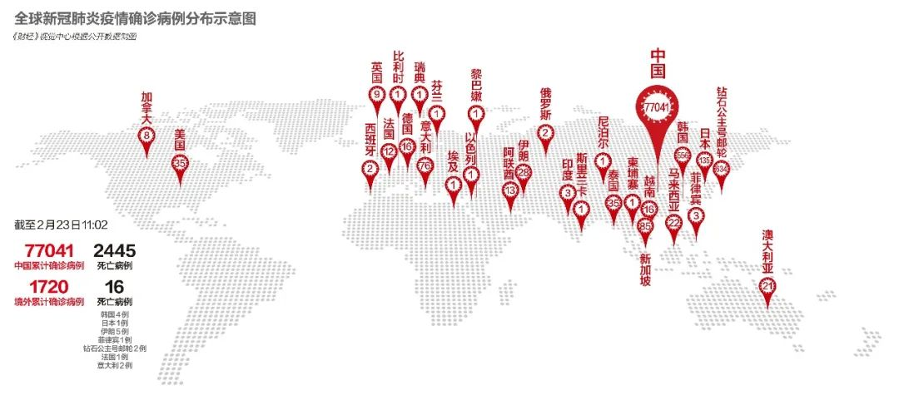
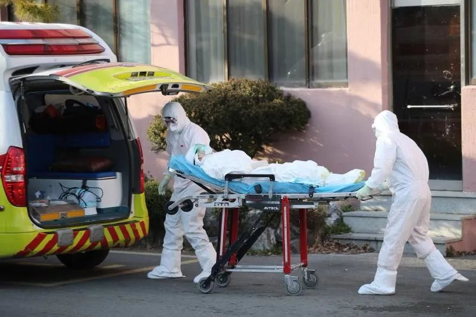

中国疫情蔓延初步遏制，全球何以多地聚集感染？
原文链接 备份链接 IMF认为，若一切向好的方向发展，中国经济有望从二季度开始恢复正常。近日个别国家和地区确诊病例激增，确诊首例新冠病毒感染病例的国家和地区也在增加，是新感染群体的感染源越来越难以查明？还是疫情传播到了某个新的临界点？ …
IMF认为，若一切向好的方向发展，中国经济有望从二季度开始恢复正常。近日个别国家和地区确诊病例激增，确诊首例新冠病毒感染病例的国家和地区也在增加，是新感染群体的感染源越来越难以查明？还是疫情传播到了某个新的临界点？
*文 | 金焱*
*编辑 | 苏琦*

2020年2月21日，伊朗纳杰夫国际机场，工作人员为旅客测量体温。图/法新
自1月20日新型冠状病毒感染的肺炎疫情从湖北爆发以来，中国经过一个多月的防控，虽然疫情数据累积不断增长，但近日新增确诊感染人数增速持续下降，治愈出院病例持续增加，疫情蔓延势头初步得到遏制。而在中国以外，韩国、日本、意大利等地近日出现多起聚集性感染，确诊病例快速增加，疫情在全球蔓延的形势引起各方面高度关注。
同时，从美国到中国，近期股市总体表现强劲，似乎表明疫情对金融市场的冲击有限。展望一季度及全年经济增长，国际货币基金组织及一些投资机构近期纷纷发布最新预测，多数认为中国经济有望从二季度开始恢复正常。

IMF预测中国经济今年增速5.6%
2月21日，中共中央政治局召开会议，研究新冠肺炎疫情防控工作，部署统筹做好疫情防控和经济社会发展工作。中共中央总书记习近平主持会议。会议指出，目前疫情蔓延势头得到初步遏制，防控工作取得阶段性成效，全国新增确诊病例数和疑似病例数总体呈下降趋势，治愈出院人数较快增长，尤其是湖北以外省份新增病例大幅减少。同时，要清醒看到，全国疫情发展拐点尚未到来，湖北省和武汉市防控形势依然严峻复杂。
国家卫健委的数字显示，2月21日0—24时，31个省(自治区、直辖市)和新疆生产建设兵团报告新增确诊病例397例，新增死亡病例109例(湖北106例，河北、上海和新疆生产建设兵团各1例)，新增疑似病例1361例。值得注意的是，当天新增确诊病例397例比前一天的889例有大幅下跌。
2月22日，国际货币基金组织（IMF）总裁克里斯塔利娜•格奥尔基耶娃在利雅得举行的二十国集团财长和央行行长会议上发表声明，“中国当局正在借助危机管理措施、流动性供应、财政措施和资金支持，努力缓解疫情对经济的负面影响。”
IMF今年1月预计全球经济增速将从去年的2.9%加快至今年的3.3%。此后，COVID-19疫情——全球公共卫生紧急事件——扰乱了中国的经济活动。IMF预测的当前基线情景假设是：中国实施了宣布的措施，且中国经济将在二季度恢复正常。因此，未来全球经济受影响的程度可能较小，持续时间可能较短。在这种情景中，2020年中国的经济增速将达到5.6%。这相比今年1月的《世界经济展望更新》低0.4个百分点。全球经济增速将下降约0.1个百分点。
IMF承认，现在仍在研究病毒传播的复杂性，事态不确定性太强，无法做出可靠的预测。很多情景都可能发生，取决于病毒被遏制以及中国和其他受影响经济体恢复正常的速度。
近日有调查数据显示，由于公司担心流行病的影响继续发酵，担心新型冠状病毒疫情暴发会减缓全球增长，美国2月份的商业活动跌至六年多以来的最低水平。
法国外贸银行（NATIXIS）亚太区首席经济学家艾西亚（Alicia Garcia- Herrero）对《财经》记者表示，中国企业恢复生产面临新的障碍，各种措施导致一些公司复工非常缓慢。有些既便开工生产率也很低，因此会在一定程度上影响供应链。虽然中美贸易摩擦中，关税也对供应链产生了影响，但比较起来，此次冠状病毒疫情对供应链的影响更大，因为疫情带来了不确定性，无论是持续的时间还是规模都不确定，而关税不但公开宣布，且规模可衡量。
中国驻沙特大使在二十国集团财长和央行行长会议上表示，尽管出现疫情，中国依然可以实现今年的经济增长目标。
世界卫生组织认为，强力和协调的措施仍然能够控制病毒在中国和全球的传播，阻止人类悲剧的延续。但IMF不排除更严重的情景出现——病毒传播持续时间更长、全球传播范围更广，对经济增长的影响更加持久。
全球多地疫情抬头的背后
尽管相较而言，中国境外的病例总数为数不多，但近日出现的迹象让人担忧：一方面个别国家确诊病例激增，另一方面确诊首例新冠病毒感染病例的国家也在增加。是新感染群体的感染源越来越难以查明？还是疫情传播到了某种临界点？
世卫组织总干事谭德赛表示，“机会窗口正在缩小，所以我们需要在它完全关闭之前迅速采取行动。在谭德赛看来，疫情可能会向任何方向发展，如果做得好，可以避免任何严重的危机，但如果浪费了机会，就会面对一个严重的问题。
韩国在2月19日新增了20例病例，20日新增53例，21日新增100个病例。23日韩国最新通报，截至当天上午9时，韩国新增123例新冠肺炎确诊病例，累计确诊病例达556例，并出现第四例新冠肺炎死亡病例。新冠状病毒病例曾在一周内激增了18倍。韩国国际广播电台报道称，2月22日，韩国江原道、世宗和蔚山市出现新冠肺炎（COVID-19）确诊病例。至此，韩国17个广域市道均出现病例，疫情呈全面扩散之势。

2020年2月21日，韩国大邱，身穿防护服的工作人员正在转运一名新冠肺炎疑似患者。图/法新
同样，新病例在一天内呈数倍激增也发生在欧洲的意大利。意大利已累计确诊79例新冠病毒肺炎感染病例， 1人治愈出院，2人死亡。病例主要集中于北部的伦巴第大区和威尼托大区，意大利沦为欧洲疫情最严重的国家。
意大利报告的确诊病例曾在一天内从三例增加到17例。该国下令将强制隔离任何与病毒检测呈阳性的病患有过接触的人。12个城镇遭到封锁，5万多居民被要求留在家中。人们相信疫情起源于当地一所医院和一个咖啡馆的感染群。据法新社报道，在距米兰60多公里的科多尼奥，在出现第一例新冠病毒肺炎死亡个案后，已于2月21日开始关闭所有的学校，教堂，体育馆等公共设施。
世界卫生组织则明确表示，担心伊朗新冠病毒感染病例近日激增可能是疫情恶化的信号。伊朗过去两天报告18起感染病例，包括至少5人死亡。这个新感染群始于宗教城市库姆，但不清楚是如何爆发的。更糟糕的是，黎巴嫩和加拿大已经发现来自伊朗的感染者。谭德塞说：“我们最大的担忧仍然是2019冠状病毒在卫生系统较弱的国家中传播的可能。为此，世卫组织发布了《战略准备和响应计划》，筹集6.75亿美元为最脆弱国家提供特别的支持。”
疫情在一些国家的恶化主要归绺于聚集性感染。
病毒学家对聚集性传播有两种可能的解释。第一种可能是，一名“超级传播者”——即一名表现出比其他人更高的脱落细菌倾向的人——将病毒传给了一大群人。有些超级传播者自己没有症状，因感觉没病出了门，或者他们遇到了一群抵抗力低的人。
以韩国为例，确诊案例中有大约230例直接和新天地耶稣教会在大邱的一个分支教会有关，感染源可能是一名60多岁的妇女，她参加了两次礼拜活动，她后来的病毒检测呈阳性。韩国官员目前正在调查是否去过教会的人与清道郡医院感染病例激增有关。目前为止清道郡医院有110多人确诊，大部分病患住在医院的精神病区内。 韩国卫生与福利部副部长金刚理（Kim Gang-lip)说，韩国的新冠病毒疫情已经进入到严重的新阶段，但是他仍然持谨慎乐观态度。
对聚集性传播的另一种解读是，人们可以各不相关地从被污染的表面感染病毒。目前还不清楚这种新冠病毒能在表面存活多久，但对其它这类病毒的研究发现，它们的活性能持续一周或更长的时间。
虽然最糟糕的情况还未出现，但伊朗和韩国感染病例激增，中东地区的黎巴嫩和以色列21日均报告首例新型冠状病毒感染确诊病例。世界卫生组织总干事谭德塞呼吁国际社会迅速采取应对行动，遏制新冠肺炎疫情蔓延。
作者为《财经》驻华盛顿记者


责编 | 黄端 duanhuang@caijing.com.cn

原文链接 备份链接 IMF认为，若一切向好的方向发展，中国经济有望从二季度开始恢复正常。近日个别国家和地区确诊病例激增，确诊首例新冠病毒感染病例的国家和地区也在增加，是新感染群体的感染源越来越难以查明？还是疫情传播到了某个新的临界点？ …
原文链接 备份链接 【财新网】（记者 黄蕙昭 综合）在拉网排查、集中隔离治疗等有力的“清底”举措下，湖北地区新冠肺炎新增确诊、新增疑似病例数据显著下滑，疫情扩散趋势放缓。然而，控制住了“新增”，还有“危重”的考验：大量病人确诊后，住院时间 …
原文链接 备份链接 【财新网】（记者 黄蕙昭 综合）在拉网排查、集中隔离治疗等有力的“清底”举措下，湖北地区新冠肺炎新增确诊、新增疑似病例数据显著下滑，疫情扩散趋势放缓。然而，控制住了“新增”，还有“危重”的考验：大量病人确诊后，住院时间 …
原文链接 备份链接 岛语 非常时期，武汉成了全国人民挂念、祈福的城市。封城后，武汉人民的真实生活是什么样？ 武汉在发生哪些变化？ 正和岛自1月26日起特别推出“叶青专栏”。叶青是一位定居武汉40年的市民，也是一名学者和官员。在过往多期的专 …
原文链接 备份链接 韩国青瓦台。图片来源：维基百科 记者 ：肖恩 “ 韩国已累计确诊204新冠肺炎病例，是海外病例第二多的国家，仅次于邻国日本。 ” 在教会和军队相继出现新型冠状病毒肺炎感染病例后，十几名来自韩国总统府青瓦台的警卫也因为曾 …